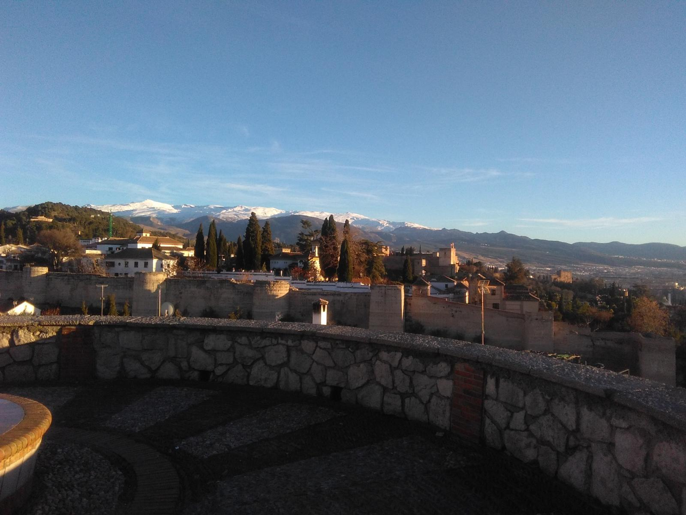

Desde el mirador de San Cristóbal, situado al oeste del Albaicín, se contempla una impresionante panorámica de Granada, que incluye destacados lugares como: la Catedral, la muralla zirí del siglo XI, la iglesia de San Cristóbal, el palacio de Dar-Al-Horra, así como una vista lateral de la Alhambra y el palacio de Carlos V.
Dado que se encuentra en uno de los puntos más altos del Albaicín, dominando lo que era la antigua ciudadela, se consideraba un lugar idóneo de defensa. Sus muros, levantados por los musulmanes en el siglo XI para proteger su fortaleza, se extienden a lo largo de la vereda occidental.
Se puede acceder a él por la cuesta de la Alhacaba, tras la puerta de Elvira, para después subir las escaleras de la cuesta de San Cristóbal.
Lo mejor es ir al atardecer, para ver cómo se van iluminando los edificios.